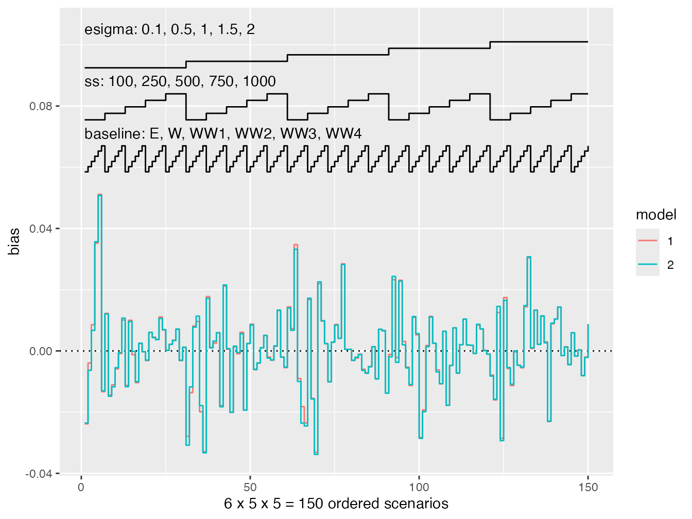

As of version 0.6.0, rsimsum supports the
fully automated creation of nested loop plots (Rücker and Schwarzer,
2014).
A dataset that can be purposefully used to illustrate nested loop
plots is bundled and shipped with rsimsum:
data("nlp", package = "rsimsum")This data set contains the results of a simulation study on survival modelling with 150 distinct data-generating mechanisms:
head(nlp)
#> dgm i model b se baseline ss beta esigma pars
#> 1 1 1 1 0.17119413 0.2064344 E 100 0 0.1 0.5
#> 2 1 1 2 0.19822898 0.2048353 E 100 0 0.1 0.5
#> 3 1 50 2 -0.03404229 0.2071766 E 100 0 0.1 0.5
#> 4 1 82 1 -0.09263968 0.2040281 E 100 0 0.1 0.5
#> 5 1 82 2 -0.05095914 0.2026813 E 100 0 0.1 0.5
#> 6 1 33 1 -0.17013365 0.2038076 E 100 0 0.1 0.5Further information on the data could be find in the help file
(?nlp).
We can analyse this simulation study using rsimsum as
usual:
s <- rsimsum::simsum(
data = nlp, estvarname = "b", true = 0, se = "se",
methodvar = "model", by = c("baseline", "ss", "esigma")
)
#> 'ref' method was not specified, 1 set as the reference
s
#> Summary of a simulation study with a single estimand.
#> True value of the estimand: 0
#>
#> Method variable: model
#> Unique methods: 1, 2
#> Reference method: 1
#>
#> By factors: baseline, ss, esigma
#>
#> Monte Carlo standard errors were computed.Finally, a nested loop plot can be automatically produced via the
autoplot method, e.g. for bias:

However:
- Nested loop plots are suited for several DGMs but not for several methods;
- The decision on how to nest the results is subjective - the top-level of nesting receives most emphasis;
- It gives an overall impression, without focusing too much on details;
- It is cumbersome to incorporate Monte Carlo errors in the plot.
References
- Rücker, G. and Schwarzer, G. 2014 Presenting simulation results in a nested loop plot. BMC Medical Research Methodology 14(1) <doi:10.1186/1471-2288-14-129>